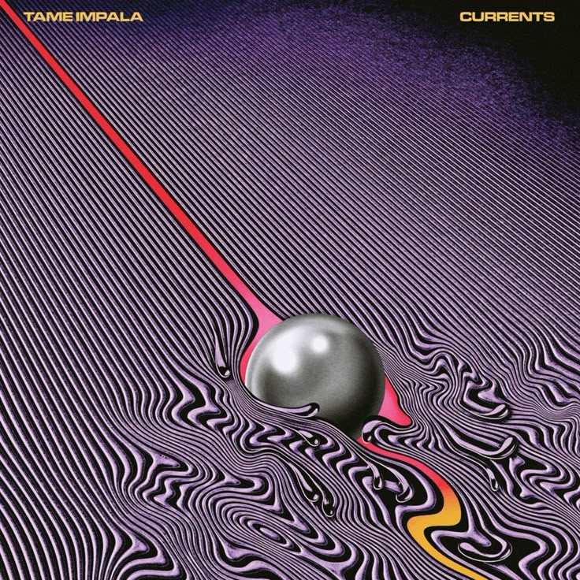
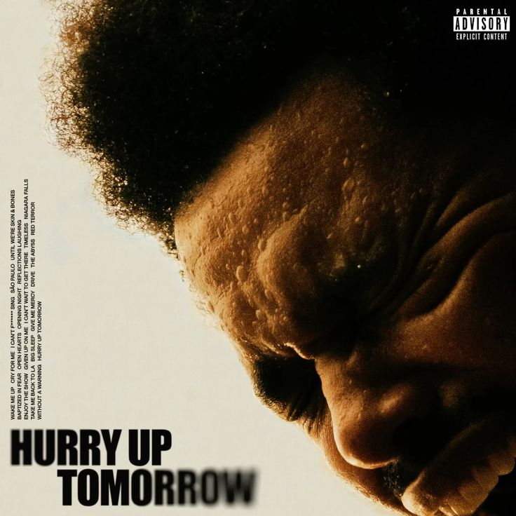
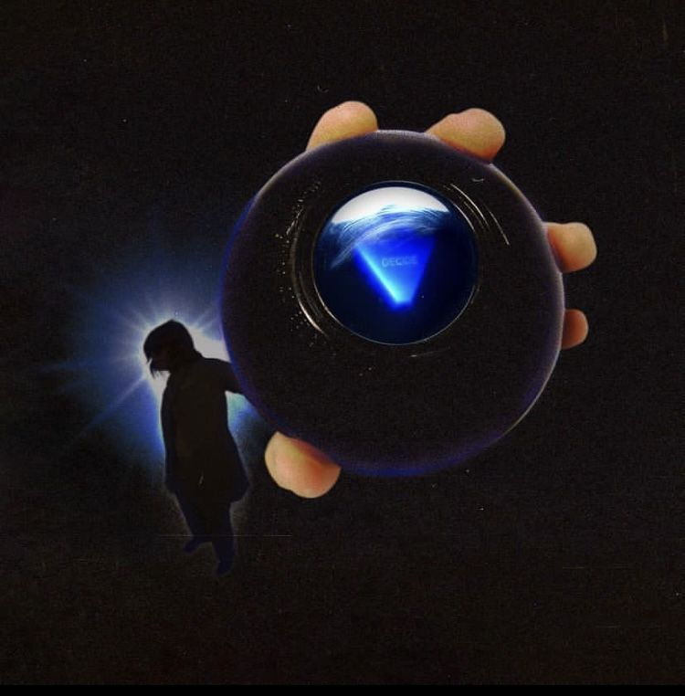
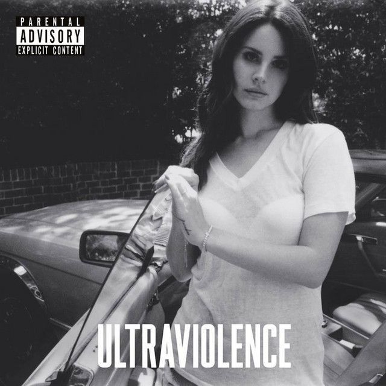
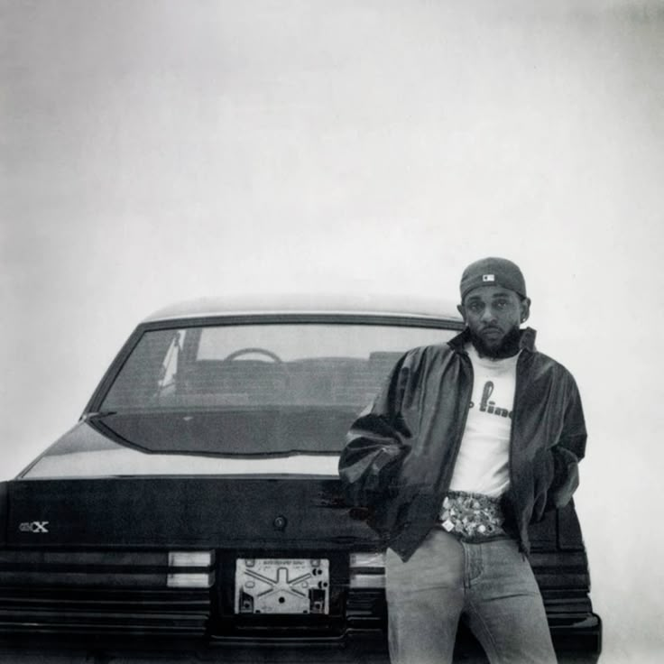

Tame Impala
- The Less I Know The Better
- Let It Happen
- Borderline
A curated selection of artists I enjoy.
These are some of the songs that I constantly return to. They represent different moods, genres, and moments that define my music taste.
These artists have shaped my listening experience. Each one brings a unique sound and style that makes their music stand out.





This page showcases some of my favorite artists and their most popular songs. The layout uses Grid for the main structure and Flexbox for internal components.